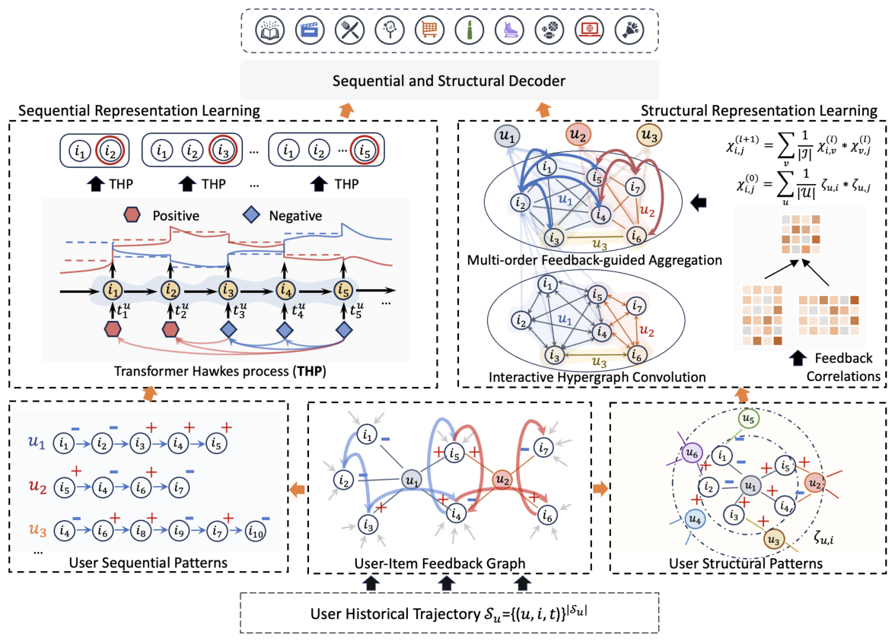

NFARec: A Negative Feedback-Aware Recommender Model (负反馈感知的推荐模型)
- 会议/期刊: SIGIR 2024
- 作者与机构: Xinfeng Wang, Fumiyo Fukumoto, Jin Cui, Yoshimi Suzuki (University of Yamanashi), Dongjin Yu (Hangzhou Dianzi University)
- 推荐链路定位: 召回（用户/物品表征学习）
- 研究方向: 图神经网络与知识图谱推荐 / 序列推荐
- 论文原文: https://arxiv.org/abs/2404.06900v3
- 开源代码: https://github.com/WangXFng/NFARec
TL;DR (1分钟核心速览)
主流 GCN/超图推荐把所有交互边视为等价正反馈，忽略了同一物品上不同用户反馈相反、以及用户会对"明显不合口味"的物品仍发生交互这两类关键信号。NFARec 用反馈极性相关系数矩阵引导两阶段超图卷积走"最优消息通路"，并用 Transformer Hawkes Process (THP) 辅助预测下一交互的情感极性，从而在序列与结构两种模式中同时利用负反馈。在 Yelp-2023/MovieLens/Recipes/Books/Beauty 五数据集上，按 R@{5,10,20}、N@{5,10,20} 排序评测，相对最强基线 EEDN 分别提升最高 +6.6% (R@20) 与 +15.3% (N@5)，且 \(p<0.01\) 显著。
Background & Motivation (背景与核心矛盾)
- 主流范式: LightGCN/SGL/XSimGCL 等在图或超图上做无权重邻域聚合，SHT/AutoCF/EEDN 进一步把序列注意力与图结构并联，以同时捕获高阶协同信号与序列兴趣。
- 前人局限 (一): 图侧所有边被等权处理，但同一物品上 \(u_1\)给正反馈、\(u_2\)给负反馈时，消息仍无差别地经\(u_2\to i_4\) 传播，节点表征被污染（图 1）；现有负反馈工作把正负表征独立学习，切断了跨物品的行为关联。
- 前人局限 (二): 序列侧默认"交互即喜欢"，无法解释用户尝试后又给差评的行为；且多数工作直接剔除评分 <4 的样本（脱离真实分布）。
- 核心洞察 (Key Insight): 反馈极性本身就是一条可用的"相似度度量"——用户的相似性应由其在共同物品上的极性一致性定义，而非仅仅"是否共同交互"；序列侧则应显式建模"下一交互会不会是负反馈"。
- 本文切入点: 把反馈极性同时作为超图卷积的路径筛选信号与序列编码的辅助监督信号。
Method (核心方法设计)
1. 整体框架 (Overall Architecture)
输入为用户历史交互序列 \(\mathcal{T}_t=\{(t_j,z_j)\}\)（含时间戳与极性标签）与全局反馈矩阵\(\mathbf{Z}\)。序列分支用 THP 自注意力编码历史交互并输出\(e^S_u\)，同时以强度函数做"下一交互极性预测"辅助任务；结构分支先用标准超图卷积（以用户为超边）得到\(e^{H1}_u\)，再用反馈相关系数矩阵\(\hat{\mathbf{X}}\)进行掩码，聚合出反馈感知表征\(e^{H2}_u\)。三路表征分别与物品嵌入内积后融合打分，主任务用加权多标签交叉熵、辅助任务用 THP 对数似然联合训练；推理时对全库物品打分排序，无需采样。
flowchart TD
A["交互序列+极性标签 Z"] --> B["THP 序列编码 + 下一交互极性辅助任务"]
A --> C["用户超图卷积 HGC (Gra1)"]
C --> D["反馈相关系数矩阵 X^(l) + Mask 掩码聚合 (Gra2)"]
B --> E["三路打分融合 r_u = tanh(Seq+Gra1+δ·MLP(Gra2))"]
D --> E
2. 关键设计拆解 (Key Designs)
-
反馈感知的相关系数矩阵与两阶段 HGC：痛点是超图卷积对超边内节点均权，冲突反馈节点间仍互相传信。作者先以 \(\chi^{(0)}_{i,j}=\frac{1}{|\mathcal{U}|}\sum_{u}\zeta_{i,u}\cdot\zeta_{u,j}\)统计物品\(i,j\)在共同用户上的极性一致度（同正/同负为正、相反为负），再用\(\chi^{(l+1)}_{i,j}=\frac{1}{|\mathcal{I}|}\sum_{v}\chi^{(l)}_{i,v}\chi^{(l)}_{v,j}\)逐层蒸馏高阶关系得到\(\hat{\mathbf{X}}=\sum_l \mathbf{X}^{(l)}\)，并对\(\hat{\mathbf{X}}\)中负元素做掩码后聚合\(e^{H2}_u=\mathrm{AvgPooling}(\mathbf{H}(u)\,\mathrm{Mask}(\hat{\mathbf{X}})\,\Lambda^{(L_2)})\)。直觉：把"极性一致"当作可乘的转移概率，等价于在多层图上只保留符号一致的通路，抑制跨立场泄漏。
-
基于 THP 的下一交互极性辅助任务：痛点是序列模型无法区分"交互了但不喜欢"。以条件强度 \(\lambda_z(t|\mathcal{T}_t)=\mathrm{softplus}\!\left(\alpha_z\frac{t-t_j}{t_j}+\mathrm{MLP}(\mathbf{h}(t_j))\right)\)建模两类极性事件的激发强度，下一交互预测为\(\hat{z}_{j+1}=\arg\max_z \lambda_z(t_{j+1}|\mathcal{T}_t)/\lambda(t_{j+1}|\mathcal{T}_t)\)。直觉：Hawkes 的衰减核天然编码"时间越久影响越弱"，迫使隐状态\(\mathbf{h}(t)\) 编码情感相关性，而非单纯物品共现。
-
训练目标与复杂度：主损失为加权多标签交叉熵 \(\mathcal{L}_{main}=-\sum_{u}\sum_{i}c_{u,i}\gamma^{(u)}_i\log\sigma(\hat r_{u,i})\)（\(c_{u,i}\)对已交互/将交互样本取不同权重\(\beta_1,\beta_2\)），辅助损失\(\mathcal{L}_{auxi}\)为交互与连续对数似然之和，其中积分项用蒙特卡洛积分\(\hat{\Delta}_{MCI}=\sum_j (t_j-t_{j-1})\frac{1}{N}\sum_k\lambda(x_k)\)无偏估计；总目标\(\mathcal{L}_{final}=\mathcal{L}_{main}+\delta_2\mathcal{L}_{auxi}\)。免负采样（全库 softmax 式打分），主导复杂度为\(O(|\mathcal{I}|^2)\)（来自\(\hat{\mathbf{X}}\)的逐层矩阵乘），\(d_m=1024\)、\(L_1=L_2=1\)。
Experimental Setup & Evaluation Protocol (实验设置与评估协议)
- 数据集与预处理: 保留评分字段，评分 <4 记为负反馈、其余为正；按数据集剔除以少于 \(n\in\{15,10,25,5\}\) 条交互的用户/物品。
| 数据集 | #Users | #Items | #Interactions | 稀疏度/密度 | 特征/场景说明 |
|---|---|---|---|---|---|
| Yelp 2023 | 48,993 | 34,298 | 3,415,569 | 0.20% | 本地商户点评，正/负 72.4/27.6 |
| MovieLens | 6,041 | 3,955 | 1,000,209 | 4.19% | 电影评分，人均 165.6 条，最稠密 |
| Recipes | 7,452 | 12,911 | 311,389 | 0.32% | 食谱交互，最稀疏难分 |
| Books | 19,804 | 22,086 | 1,273,679 | 0.29% | 图书评分，人均 64.3 |
| Beauty | 22,363 | 12,101 | 198,502 | 0.07% | 美妆，人均仅 8.9，最稀疏 |
- 数据划分与防穿越 (Splitting Strategy): 按 7:1:2 比例划分 train/valid/test（非 Leave-One-Out，非全局时间戳切分）；序列分支内部用上三角 Mask 防止 \(e_{t-1}\) 窥视未来事件。
- 排名评测协议 (Ranking Protocol): 采用 Recall@K 与 NDCG@K，\(K\in\{5,10,20\}\)；原文未显式声明候选集构造与负采样比例，按指标规模与"全库打分"实现推断为 Full-Ranking（全库未交互排序），需注意这一点在复现时存在协议模糊性。
- 对比基线与超参设置: 5 大类共 12 个基线（CF: DirectAU/InvCF；GCN: LightGCN/SGL/HCCF；GCL: NCL/LightGCL/XSimGCL；Diff: DiffRec；S&G: SHT/AutoCF/EEDN）。\(d_m=1024\)，\(\delta\approx1.2\)，\(\delta_2\)依数据集在\(10^{-5}\sim0.5\)间取值；超参用 Optuna 搜索；采用 10 次试验 t-test，\(p<0.01\) 标
*。
Key Experimental Results (实验关键数据)
1. 主实验对比 (Main Results)
| 模型 | Yelp'23 R@20 | Yelp'23 N@20 | ML R@20 | ML N@20 | Beauty R@20 | Beauty N@20 |
|---|---|---|---|---|---|---|
| LightGCN | 0.0752 | 0.0715 | 0.1107 | 0.2047 | 0.0879 | 0.0570 |
| SGL | 0.0721 | 0.0740 | 0.1432 | 0.2541 | 0.0939 | 0.0607 |
| XSimGCL | 0.0857 | 0.0756 | 0.1426 | 0.2481 | 0.1007 | 0.0640 |
| DiffRec | 0.0809 | 0.0713 | 0.1204 | 0.2284 | 0.0876 | 0.0517 |
| SHT | 0.0796 | 0.0785 | 0.1509 | 0.2400 | 0.0901 | 0.0587 |
| AutoCF | 0.0939 | 0.0810 | 0.1470 | 0.2452 | 0.1034 | 0.0625 |
| EEDN (次优) | 0.1031 | 0.0858 | 0.1628 | 0.2631 | 0.1054 | 0.0648 |
| NFARec | 0.1074 | 0.0894 | 0.1736 | 0.3007 | 0.1103 | 0.0683 |
| Improv. | +4.2% | +4.1% | +6.6% | +14.2% | +4.6% | +5.4% |
其余数据集：Recipes R@5 0.0292 (+8.6%)、N@5 0.0418 (+9.4%)；Books R@5 0.0489 (+3.4%)、N@5 0.1139 (+5.3%)。
2. 消融实验 (Ablation Study)
NDCG@20，w/o X 为移除该分支；MovieLens 上 w/o Seq、w/o Gra2 是在同时去掉 Gra1 后测得：
| 变体 | Yelp'23 | MovieLens | Recipes | Books | Beauty |
|---|---|---|---|---|---|
| w/o Seq (去 THP 辅助任务) | 0.0862 | 0.2741 | 0.0460 | 0.1026 | 0.0654 |
| w/o Gra1 (去基础超图卷积) | 0.0866 | 0.3007 | 0.0462 | 0.1133 | 0.0648 |
| w/o Gra2 (去反馈感知聚合) | 0.0873 | 0.2865 | 0.0466 | 0.1094 | 0.0669 |
| Full | 0.0894 | 0.2851 | 0.0492 | 0.1141 | 0.0683 |
编码器替换（表 4，THP vs Transformer vs NHP）：Yelp'23 N@20 为 0.0894 / 0.0777 / 0.0793；MovieLens R@20 为 0.1736 / 0.1512 / 0.1478；去掉 Mask 后 MovieLens R@20 从 0.1736 跌至 0.1608。
3. 关键实验发现 (Key Findings)
- 序列辅助任务贡献最大且最稳定：移除 Seq 使五数据集 N@20 分别下降 3.7%/9.7%/7.0%/11.2%/4.4%，且 THP 显著优于同架构 Transformer（MovieLens R@20 +14.8%）与 NHP（受 RNN 长程依赖短板拖累），说明极性强度的时序衰减建模是主要增量来源。
- 无反馈约束的图结构收益不稳定，甚至为负：单独 Gra1 在 MovieLens 上 N@20 反而比移除后低 5.2%（0.2851 vs 0.3007），而在 Books 上几乎无增益（+0.7%），印证"等权传信在冲突反馈网络上产生噪声表征"；叠加 Gra2 后 MovieLens 由 0.3007 回落但仍高于 w/o Gra2，说明反馈感知通路主要在稠密、极性分化明显的数据上兑现收益。
- 阶数不宜过高：1 阶相关系数在 Recipes/Books 最优，2 阶在 Yelp/MovieLens/Beauty 最优，3–5 阶持续退化（MovieLens R@20 从 0.1736 降至 0.1709/0.1683），因为高阶幂乘稀释了低阶依赖；同时 \(\delta\) 在全部数据集上最优值稳定于 1.2 附近，仅 Recipes 敏感度偏高。
Highlights & Limitations (亮点、对比与审稿批判)
- 与代表作对比 (vs. Prior Work): 相比 SGL/XSimGCL 只做边/节点级对比增广而不区分极性，NFARec 把极性符号直接写进图卷积的转移核；相比 SHT/AutoCF 的"序列+图"拼接，本文的序列侧引入了事件强度而非注意力池化；相比 EEDN 挖隐式特征，本文显式建模负反馈语义，故在 NDCG 类指标（排序质量）上增益（+14.2%）远大于 Recall（+6.6%）。
- 可迁移亮点: (1) 用"符号一致性矩阵 + 负元素 Mask"改造任意超图/GCN 聚合层，可作为即插即用的去噪算子；(2) 用 Hawkes 强度作辅助任务预测下一交互极性，可直接迁移到短视频跳过、退货、点击后秒退等隐式负反馈场景。
- 审稿级局限批判: (1) 复杂度 \(O(|\mathcal{I}|^2)\)来自逐层构建\(\hat{\mathbf{X}}\)，在百万级物品库上不可直接部署，且论文只报告了复杂度量级而无实际训练/推理时延；(2) 评测协议交代不足——未声明 Full-Ranking 与采样比例、未做时间切分（比例划分可能造成未来信息泄漏），负反馈判定一律用评分 <4 也过于粗糙，缺少对隐式负反馈（跳过）的验证。
Rating (四维评分)
- 方法创新性 (Novelty): ⭐⭐⭐⭐ （把反馈极性同时用作超图转移核与 Hawkes 辅助监督，两条线互补且互不重复，但单点技术均为已有模块的符号化改造）
- 评估协议与实验扎实度 (Protocol & Experiments): ⭐⭐⭐ （五数据集 + 12 基线 + t-test 与多组消融较完整，但划分方式、候选集构造与负样本协议交代不清，存在复现歧义）
- 写作与数学规范度 (Clarity & Rigor): ⭐⭐⭐⭐ （公式链条完整、符号统一，MCI 近似与掩码定义清晰，个别公式编号与超参符号 \(\delta_1\) 前后略有出入）
- 工业落地与复现价值 (Industrial & Practical Value): ⭐⭐⭐⭐ （代码开源、模块可插拔，但 \(O(|\mathcal{I}|^2)\) 的相关系数矩阵在大规模场景需稀疏化或邻域截断改造）